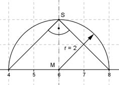

Aufgabe 99 Der Scheitelpunkt einer Parabel liegt oberhalb der x-Achse und bildet mit den Punkten (4|0) und (8|0) ein rechtwinkliges Dreieck. Berechnen Sie die Koordinaten des Scheitelpunktes. Skizze:  Der Scheitelpunkt liegt wegen der Symmetrie in der Mitte zwischen den beiden Nullstellen (4|0) und (8|0), also an der Stelle x = 6. Da im Scheitelpunkt ein rechter Winkel zu den Nullstellen sein soll, muss er auf dem Thaleskreis um x = 6 mit dem Radius r = 2 liegen. Der Abstand von M zum Scheitelpunkt S ist somit gleich dem Radius r und die Scheitelpunktkoordinaten sind S(6|2).